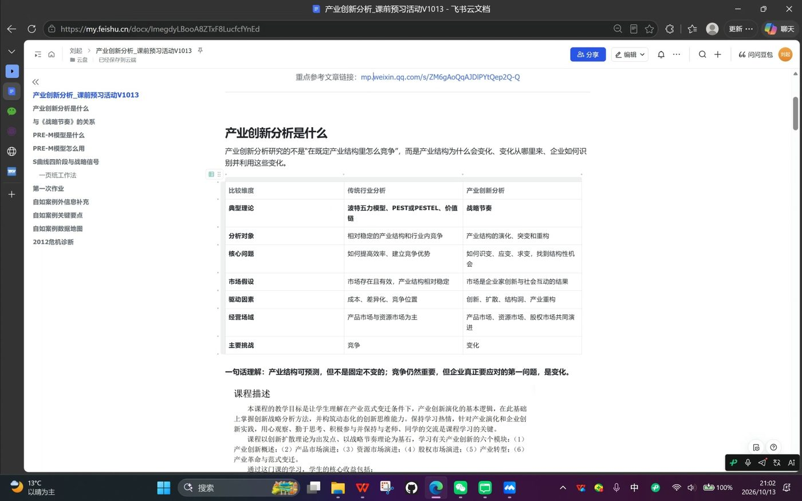
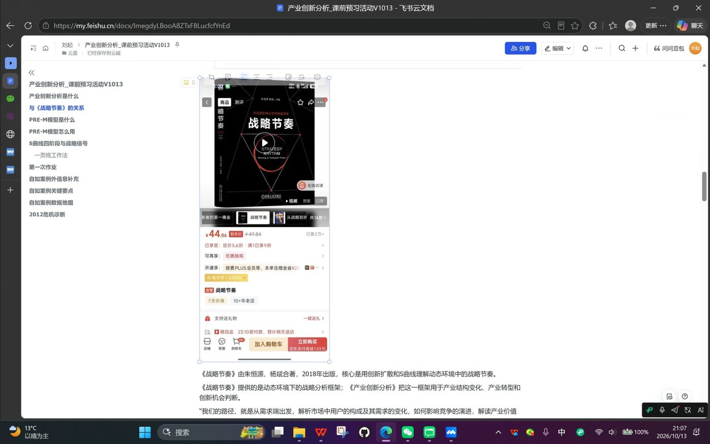
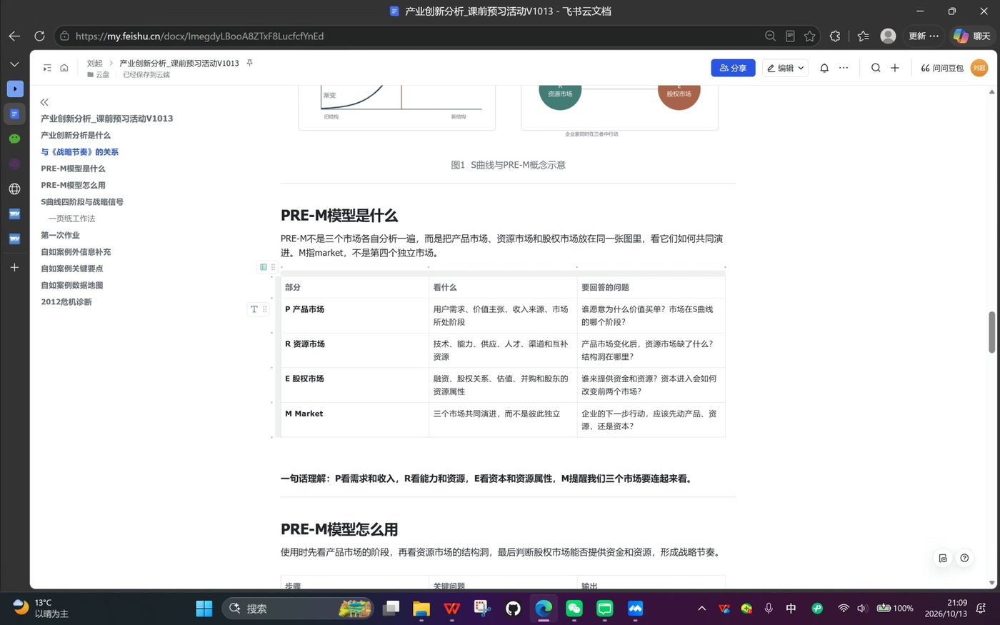
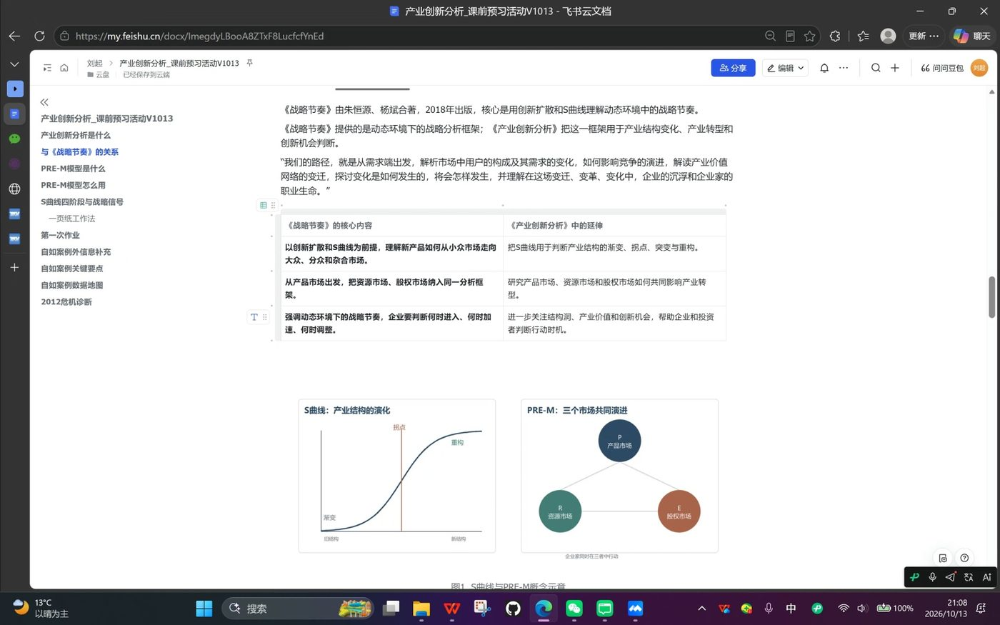
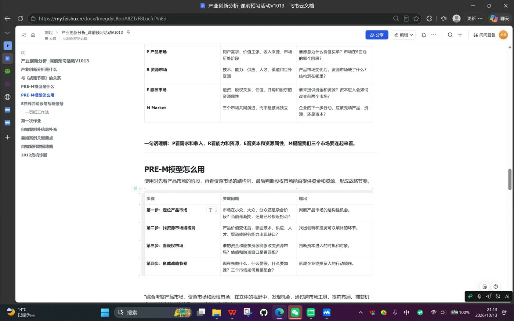

一页速览
- 这门课分析什么：不是在既定产业结构里比谁效率高，而是研究产业结构本身怎么变化，从变化中识别结构性机会。分析是决策的前置条件，这门课就是把"分析"做透。
- 用什么分析：核心方法论来自朱恒源《战略节奏》。PRE-M 模型把产品市场、资源市场、股权市场放在一张图里看协同演进；时间维度（何时进入、加速、调整）是它区别于静态分析的关键。
- 作业是什么：一页 A4 手写纸质版，上课前交给助教，迟到和课后提交都不收。案例 1 自如友家两问：你怎么看自如的商业前景？如果你是熊林，现在怎么办？10 月 17 日下午课前交。
- 答题时间点：王鑫现场确认过，按案例时间点 2013 年 4 月作答，不是 2026 年。不许开上帝视角马后炮。
- 案例核心张力：大三月 104% 达成靠的是短期激励（提成翻倍、续约降价、销控），没有改变定价模式与业务结构。刘起给出的最佳答题点：2013 年 9 到 12 月会不会再出现这个问题？
- 下一场预告：10 月 14 日（周二晚）邵忠及两位嘉宾的第二门课课前读书会；课中段班委还将组织线上领读，笔记沉淀到飞书库。
刘起开场声明：本次分享只基于他对课程材料的个人理解，所有内容课堂上老师还会进一步讲解与讨论，随时可能与他讲的不一样，以老师为准。
课程定位：产业创新分析到底分析什么
从名字拆起：产业创新 + 分析
刘起把课程名拆成两半：产业创新是项目（清华产业创新 MBA）的核心课程标签；分析与之前很多"管理"类课程不同，它后面没有跟"决策"，分析是决策的前置条件。这门课的目标就是把分析这一环做透。
与传统行业分析的对照
这是全场最重要的框架表（刘起的飞书预习文档原表，会议投屏截图）：
| 比较维度 | 传统行业分析 | 产业创新分析 |
|---|---|---|
| 典型理论 | 波特五力模型、PEST/PESTEL、价值链 | 战略节奏 |
| 分析对象 | 相对稳定的产业结构和行业内竞争 | 产业结构的演进、突变和重构 |
| 核心问题 | 如何提高效率、建立竞争优势 | 如何识变、应变、求变，找到结构性机会 |
| 市场假设 | 市场存在且有效，产业结构相对稳定 | 市场是企业创新与社会互动的结果 |
| 驱动因素 | 成本、差异化、竞争位量 | 创新、扩散、结构洞、产业重构 |
| 经营场域 | 产品市场与资源市场为主 | 产品市场、资源市场、股权市场共同演进 |
| 主要挑战 | 竞争 | 变化 |

刘起用 TechMark（管理实战模拟）给传统范式做了注脚，五组同学身临其境：所有参赛组面对同样的竞争环境、同样的产业结构、完全同类的产品，答题纸上能输入的参数大家都一样、是有限的，竞争全部发生在参数变化里。它的基本假设是市场存在且有效：降价就能卖得更多，供需曲线一定成立。而现实显然并不总是这样。
一句话理解：产业结构本身可以预测，但不是固定不变的。竞争依然重要，但企业真正要应对的第一问题，是变化。我们要做的是学习变化的规律：预测变化、找到变化、顺应变化。
理论依据：《战略节奏》
- 课程核心理论依据是朱恒源《战略节奏》（朱恒源、杨斌著，2018 年出版）的方法论；《产业创新分析》教材本身即将出版，目前能用的是《战略节奏》。
- 获取渠道：经管院图书馆、校图书馆均有馆藏，可在图书馆电子资源里在线阅读；刘起没找到公开电子版，想精读可买实体书，只想翻翻就去借。
- 老师下发的预习材料里还有一篇微信文章：上届（24P5）课程结束时张欣烨写的总结回顾，信息量很大，值得读。
- 刘起现场引用《战略节奏》引言：从需求端出发，解析市场中用户的构成及其需求的变化如何影响竞争的演进，解读产业价值网络的变迁，探讨变化如何发生、将会如何发生，理解变迁中企业的沉浮与企业家的使命。
| 《战略节奏》的核心内容 | 在《产业创新分析》中的延伸 |
|---|---|
| 以创新扩散和 S 曲线为前提，理解新产品如何从小众市场走向大众、分众和杂合市场 | 把 S 曲线用于判断产业结构的渐变、拐点、突变与重构 |
| 从产品市场出发，把资源市场、股权市场纳入同一分析框架 | 研究产品市场、资源市场和股权市场如何共同影响产业转型 |
| 强调动态环境中的战略节奏，企业要判断何时进入、何时加速、何时调整 | 进一步关注结构洞、产业价值和新兴机会，帮助企业和投资者判断行动时机 |

PRE-M 模型：三个市场、一张图
模型是什么
PRE-M 不是三个市场各自分析一遍，而是把产品市场（Product）、资源市场（Resource）、股权市场（Equity）放在同一张图里，看它们如何共同演进（M = Market）。
| 部分 | 看什么 | 要回答的问题 |
|---|---|---|
| P 产品市场 | 用户需求、价值主张、收入来源、市场所处阶段 | 谁愿意为什么价值买单？市场在 S 曲线的哪个阶段？ |
| R 资源市场 | 技术产能、供应、人才、渠道和互补资源 | 产品市场变化后，资源市场缺了什么？结构洞在哪里？ |
| E 股权市场 | 融资、股权关系、估值、并购和股东的资源属性 | 谁来提供资金和资源？资本进入会如何改变竞争格局？ |
| M Market | 三个市场共同演进，而不是彼此独立 | 企业的下一步行动，应该先动产品、资源，还是资本？ |
一句话理解：P 看需求和收入，R 看能力和资源，E 看资本和资源属性，M 提醒我们把三个市场联系起来看。
刘起还把三个市场与已修课程做了连接：产品市场对应营销管理、战略管理的一部分；资源市场与运营有点像但没那么定量化、更在意结构；股权市场的内容主要在公司金融课学。他坦言：三个市场"共同演进到底怎么协调"，是他目前也没完全理解的地方，要等课程里去找答案。

S 曲线与创新扩散：市场发育四阶段
创新扩散是 1960 年代提出的经典理论。新产品市场沿 S 型曲线经历四个阶段：
- 小众：尝鲜者先进入，人少但接受度高、传播意愿强，总增长天花板不高；
- 大众：尝鲜者的传播带来快速扩散，需求被普遍接受，货物成本降低，高速增长；
- 分众：完全符合产品画像的客户已被满足，需求开始分化，增速放缓；
- 杂合：需求五花八门、高度碎片化，市场成熟。
刘起强调：这门课关注的不是去哪里获客，而是市场已经扩展到哪一个阶段，因为强调的是节奏，其他所有动作都要配合当前市场阶段来决定。

资源市场的结构洞：电动车电池的例子
随着产品市场阶段和需求的变化，要在上游技术、供应、人才、渠道、服务等维度寻找结构性差异机会（结构洞）。刘起用书里的例子现场讲解：
电动汽车的发展对动力电池的要求不一样了：研发方向、供应方向、整个电池行业的规模都发生很大变化。当需求刚刚产生而资源没跟上的时候，出现的就是资源市场的结构洞。
应对策略分两侧：如果你是上游，就死命往里投钱，你以后一定会有市场；如果你是下游，就要尽快做资源站位，跟上游绑定好，在结构洞被弥补的时间窗口里获得相对低成本的资源，建立竞争优势。资源市场更侧重结构，而不是单纯的定量化运营。
股权市场的节奏约束
创新者的投入肯定来不及攒钱，需要股权市场的资金配合新产品定义、配合资源市场布局。如果三个市场节奏不协调，就会形成灾难：要么资源跟不上产品发展，要么资金链跟不上。用这个模型考量的就是如何形成战略节奏：先做什么、什么要等、什么要加速。
PRE-M 四步使用法
使用顺序：先看产品市场所处的阶段，再看资源市场的结构洞，最后判断股权市场能否提供资金和资源，形成战略节奏。
| 步骤 | 关键问题 | 输出 |
|---|---|---|
| 第一步：定位产品市场 | 市场在小众、大众、分众还是杂合阶段？当前是渐变期还是接近拐点期？ | 判断产品市场的结构性机会 |
| 第二步：找资源市场结构洞 | 产品价值变化后，哪些技术、供应、人才、渠道、服务能力出现缺口？ | 找出创新和投资可以补缺的环节 |
| 第三步：看股权市场 | 谁的资金和股东资源能降低资源市场的不确定性？估值和融资窗口在哪里？ | 判断资本进入的时机和对象 |
| 第四步：形成战略节奏 | 现在做什么、什么要等、什么要加速？三个市场如何互相配合？ | 形成企业或投资者的行动顺序 |

判断市场阶段的三个信号
真实市场不会长成完美的 S 曲线，站在曲线左半边时，看不到右半边。刘起给出三个判断信号：
- 增长速度是否产生变化（趋势判断）；
- 关键用户构成与合理的用户调研：现在的用户是什么类型？有没有模仿者？能不能带来模仿者？
- 新用户需求是否一致：开发新产品时，边际成本能否有足够的收益？
这三个信号在后面的自如案例里"非常关键"：自如 2012 年底的困境，本质上就是站在 S 曲线中段判断走向的难题。
课本里的理论放大器：五篇专题阅读导读
课程资料后附五篇专题阅读，正好是 PRE-M 各构件的实证放大器，预习时按对应关系读效率最高：
| 专题阅读 | 对应构件 | 核心内容一句话 |
|---|---|---|
| 1《耐用品市场起飞的关键规模》 | S 曲线、起飞点 | 用 Bass 模型拟合 12 类耐用品渗透数据：相对模仿因子 q/p 与起飞相对关键规模呈对数关系，上限约 22%。管理含义：初期勿过度投入压库存，也不要因初期表现差就放弃，接近 20% 时要备好供应链 |
| 2《我国功能手机资源市场演化：1998-2008》 | R 资源市场、需求拉动 | 国产手机厂商靠三代资源整合模式创新（模块化生产 → 手机设计公司 → 交钥匙方案）绕开创新能力短板，资源市场演化与产品市场演化匹配决定格局 |
| 3《产业链结构性变动的估值反映：以智能手机摄像头模组为例》 | 结构洞、E 股权市场 | 主导设计形成后相关能力供不应求形成结构洞；投资人要在企业集中释放业绩前入场，成长期前买"结构洞资产组合"，成长期后转为个股精选 |
| 4《智能手机操作系统之战》 | 主导设计、资源市场竞争 | Symbian 崛起、iOS 与 Android 诞生与资源市场竞争的完整案例 |
| 5《技术经济范式主导逻辑与智能革命》 | 更宏观的产业革命视角 | 范式主导逻辑 = 通用技术 + 经济租金 + 组织形态的共识；四次产业革命（蒸汽/电气/信息/智能）各有其主导逻辑，需求决定范式从哪个市场开始跃迁 |
作业要求：一页 A4 手写，课前交
形式与提交
- 一页 A4 纸，手写，纸质版。
- 上课前提交助教，不接受上课以后提交的作业（课程资料原文如此，老师"再三强调、非常明确并且坚定"）。
- 案例 1 自如友家：10 月 17 日（第一次课，下午）上课前提交。现场左佑确认：第一次课本身是全天，课程要求是下午上课前交，不是早晨。
- 王鑫追问"是不是不能迟到"，刘起确认：对，第一是不能迟到，迟到这件事"非常明显"。
- 后两案：案例 2 艾勒可 10 月 24 日下午课前交；案例 3 APPLE Inc., 2008 11 月 7 日下午课前交。
案例 1 的两个问题（原题，开放题，没有标准答案）
- 您怎么看自如的商业前景？
- 如果您是熊林，现在怎么办？
王鑫现场问"最终让我们写啥"，刘起翻资料后笑答："没有答案"，就两个非常开放的问题。商黑旦补充：案例虽给了一整页空间，但"真正要写的东西不多，并不要求必须把它填满"。
答题时间点（现场问答确认）
卓信成收尾时进一步阐释：老师并不期望我们站在 2026 年回答这两个问题。"以马后炮、事后诸葛亮去看自如，你会讲出很多清醒认识，但那不是分析。"应该基于案例本身提供的信息，站在战略周期的起点或某时间段的终点上去看，这样更有代入感。
怎样算好答案（刘起的判据）
在这门课里比较好的一个答案，就是你能说出来他现在处于一个什么阶段，他现在应该解决的问题是什么，哪些是紧要的，哪些不是。
关于"商业前景"这一问，刘起还点出它的巧妙之处：到 2026 年自如确实活得不错，所以说它前景差是一个非常有挑战性的判断；说它会发展很好、会上市则太简单（因为现在确实如此），真正的答题空间在于用框架论证自己的判断。
案例外补充：熊林履历与自如的后来
刘起做了大量案例外信息补充（这部分是逐字稿独有的细节）：
熊林的完整履历
- 97 年毕业 → 99 年加入联想，历任开发工程师、项目经理、销售经理；清华 MBA 2000 级 P1 班学长（非常年轻就读 MBA，2000 年时很少见）→ 神州数码做咨询 → 05 年加入 IBM 做战略咨询顾问 5 年 → 2010 年 8 月加入链家任副总经理 → 2021 年前后出任自如董事长。
- 他为《战略节奏》写过荐言（2018 年）。刘起据此推断：熊林与朱老师的理论之间可能有联系，"包括甚至可能包括我们案例中的这个时间点，熊林都是有战略节奏这根弦儿的"，这也是他能带着自如穿越波折的理论基础。
自如大事记（2013 之后，案例时间线外）
- 2016 年从链家独立，越做越大；中间经历风波：2018 年甲醛门；2020 年前后蛋壳爆雷，行业剧烈波动。
- 目前自如在四个省市有业务，稳步扩张、势头较好。刘起自己就是自如用户（"自如课 8 级"），并吐槽"服务费太贵了"，但他认为服务费恰是案例里没提却非常关键的一点。
- 2013 年这个时间点也可能藏着后续才爆发的雷：它该什么时候解决？是不是 2013 年需要面对的问题？这是节奏上需要考虑的事情。
刘起的两条核心判断
- 自如做的是产品服务系统级的创新：它和以往所有租房业态（个人出租、酒店式公寓等）都不一样，虽然做的都是租房这件事，但"做的并不只是一个装修更好的合租产品，而是把一个产品服务系统、房源平台做成一个非常复杂的、很重的、新的租赁模式"。这是它配得上"产业创新分析"案例的原因。
- 租售比洞察（刘起的个人见解）：熊林的两个原始洞察（租金快速上涨、每套房需住 8.8 人）之外，还有一个更重要的结构性变量，2011 年前后房价增速远高于租金增速，租售比快速扩大。这意味着相当一部分人赚到了钱但买不起房，会出现更多"追求一定精致生活但暂时买不起房"的人。"我觉得这个可能比那些条件对这个市场机会的影响更大。"
自如案例领读：从熊林入职到大三月
案例出处：改写自张春婵《从自如友家业务创立看新业务孵化》，清华大学硕士学位论文，2016 年 5 月。以下按案例叙事时间线领读，融合逐字稿讲解与案例原文。
背景：熊林加入链家（2010）
- 链家 2001 年成立，草根创业，2010 年已是北京二手房市占率最高的经纪公司，700+ 门店、10000+ 经纪人。2009 年二手房业绩突破 15 亿，环比 +307%。房地产起飞期，中介卖一套房抽四五个点，收入飞速提高。
- 出租与售卖存在互斥性：房子租出去了，业主短期内就不会考虑卖，也听不进中介制造的卖房焦虑；且租赁业务收入远低于买卖。刘起点破：这就是链家经纪人看不上租赁的根本原因，租赁当时就是"边角料"。
- 熊林 2010 年 8 月加入链家，任副总经理，主动选了三个中心：数据产品中心、楼盘字典中心、租赁管理中心。前两个是数据治理，驾轻就熟；租赁管理中心是大家最不能理解的，员工诧异。
机会识别：北漂怎么住（需求的结构性变化）
- 数据信号：21 个月里租金平均上涨 17.7%。
- 市场盘点（2010 年北京）：约 450 万套房，其中约 90 万套出租；2120 万常住人口中约 800 万人需租房，折合每套房要住 8.8 人；平均工资 4200 元 vs 平均租金 3009 元，月租金收入占比高达 72%。
- 暗访验证：知春路太月园/太阳园，两居室被隔成 6 居室，家具残败，押一付三还要预付，365 元/年清洁费却没有保洁，即便如此每套房都满租。刘起点评：自如之前，"整个租房市场可以说是蛮荒时代……没有熟人，租房完全是开盲盒"。
- 商业模式设想：把租房全过程管理起来，同样一套 4000 元/月的房，一年经手现金流是普租模式的 12 倍。
产品设计与组织启动
- 产品：自如友家，按间出租，统一风格装修、全新家具电器、每月一次公共区域保洁、租期维修。目标客群 25-35 岁、月收入 5000-15000 元的单身或小两口。刘起特别提醒：最开始做的就是合租（当时的"群租公寓"），两居室处理完变四居六居，有小孩的家庭大概率住不了。租客被称为"自如客"，一个有粘性的身份设计。业主端产品叫"资益+"：租约 2-5 年，每年 35-45 天空置期作管理服务费，赠送全套家具电器。
- 组织：2010 年 10 月 18 日链家英雄大会上，自如事业部正式成立（昆泰国际大厦 18 层整层，15-17 层是链家），下设业务拓展、配置、运营管理、服务支持、内容推广、自如网产品部，技术开发外包；采购法务财务等职能与链家共享。
- 收入结构（两头吃）：租客端收服务费，业主端要空置期，加上装修包装让出租价值大于收房价值，免租期收益 + 溢价收益 + 服务费收益。同一套 4000 元的房，普租收益 4000 元，做自如最大收益约 12800 元/年，推荐并完成出租的经纪人可拿约 3 倍普租业绩。
渠道困境：经纪人为什么不愿做自如（资源市场的核心矛盾）
刘起把这一段定位为案例的主线矛盾，并给出自己的判断：
- 认知不齐：为什么房子要配那么好才租得出去？为什么只租给有工作证明的人？为什么一房一价不接受议价？为什么收房时就要定出房价、尾数还不上整百？为什么一签两年？
- 麻烦：习惯了"一锤子买卖"的经纪人，签完自如单只是服务开始，业主租客出了事还回来找他；且业绩下发慢（要等配置完成、房子租出），计算参数复杂。
- 利益冲突（最核心）：买卖业务挣钱得多，运营总监们不愿意让精英团队浪费时间；自如一收 2-3 年，房子稳定住着人，未来再卖难度增大。"房地产非常热的时候，经纪人宁可放弃这几千块钱去做买卖生意；等到房地产逐渐变冷的时候，他才真正愿意做租赁。前面这些困难的根本原因我认为还是第三层。"
破局动作：管家天天传房源纸、每周四组织集中空看、磨晨夕会做培训、每月设计收出房激励；熊林每月与两位运营副总非正式沟通（周二羽毛球局），参加运营总监会，左晖每季度组织管委会层级战略研讨专门讨论自如。
关键的盟友逻辑（被竞对侵蚀）：部分总监发现，自己只做买卖没问题，但如果房子被别人（我爱我家房管业务）出租了，自己也一样卖不了，不如支持自如做出租。我爱我家房管是很"土"的业务：收来的就是隔断房，没什么装修，只管中介和钥匙。刘起强调：链家经纪人体系就是自如当时的核心资源市场，他不可能去拉我爱我家、麦田，链家（北京最大）是唯一可用的存量资源。
第一年与产品打磨（2011.5-2012.8）
- 2011 年 5 月 24 日第一套收房，配置完成即被"秒杀"；收房/出房逐月爬坡（6 月收房 60 套、出房 130 间，9 月收房 143 套、出房 448 间），出租周期 8→16 天，数据良好。
- 三个典型冲突：品质不坚持（旧床垫事件：管家为省 500 元拒绝换床垫，熊林当场要求换）、配置成本/时效/质量不满（预估 5 天的配置周期被各种现实拉长）、一线对服务中心不满（400 占线、维修慢、保洁不干净）。刘起点题：这些摩擦的本质是资源市场的人才与团队磨合，自如的核心资源第一是房子，第二是服务团队（配置、收房、坐席、管家）。
- 2011 年 11 月-2012 年淡季：熊林判断"自如体量太小，市场足够大"，坚持加速收房，万户侯抽奖活动（在线选房最高减免 1 个月租金）刺激下，所谓淡季对自如毫无影响，12 月创出房新高。
- 产品迭代：闺宿（客户妈妈提出"能不能全住女孩"，熊林当场答应并做成产品）、毛坯房产品（2011.10）、老旧房产品（2011.12），刘起解读为资源面的扩展：精装房收得差不多后，二环老公房、外环毛坯房需要新的产品方案。自如 2.0（2012.1 启动研发、7 月 15 日发布：服务费改为房租的 10%、月度保洁不另收费、家具全部自如设计、增加储物设计、四种装修风格：拿铁/木棉/布丁/原味）。刘起算账：1.0 收一个月服务费，2.0 改收 10%，"1.0 到 2.0 之间是非常明显的价格下降"，"也可能正是由于它下降了，导致 1.0 租不出去了"。
- 三个系统：资产管理（把房子管清楚、业绩管清楚）、服务（保洁、维修、400 工单）、自如网（获客前台），三者数据互通，业务高度线上化、标准化。刘起强调：大规模线下业务如果没有标准化，"最开始定的品质化的出租是不成立的"，信息化是这套模式成立的关键。三个突破性功能：目标看板（替代人工层层报日报）、收据电子化（2011.12 首张机打收据，2012.3 实现 100%）、空置房源查询（按 15/30/45/60/100 天分档，360 度管控）。
- 熊林的公式：自如 = 产品 + 服务 + 自如网。服务费坚决不并入房租："服务费就是鞭策整个团队不断提升服务水准的皮鞭。"所有服务打包在房租内一口价，不可单选。
- 行业坐标：2011 年还没有移动互联网，别的公司完全没有跟进这种重资产模式，"正常房产经纪是没有存货的"，自如逆周期做了有存货的生意；链家更早的全程代理业务就因管理混乱而停掉。
危机潜伏（2012.9-12）：本次作业的现场
时间线是理解这道作业题的钥匙：
- 2012.4 起：熊林判断租赁黄金周期将至，定下三倍收房目标，8 月收房达到最高峰（781 套）。
- 2012.9.15：1.0 库存消化得差不多后，自如 2.0 全面上线，所有房源停配 1.0。间均配置成本从约 7300 元陡增到 9400 元。刘起点评："在商言商也不为过，但如果这样考虑，其实并不是特别厚道，你有 1.0 的东西也有 2.0 的东西，俩定价差不多的时候，大家会用脚投票"，为危机埋下伏笔。
- 9 月指标全面恶化：业绩环比 -16%，收出量各 -8%，提前解约暴增（月均 30 单、峰值 76 单的基数上冲到 441 单），空置扣罚业绩环比 +867%（13.5 万 → 104 万）。
- 10 月：总业绩环比 -30%，间均出租周期 21 → 27 天，空置超 30 天房源占比 53%；一线恐慌性降价，一房一价率 82% → 72%。熊林推出"人人享自如"（经纪人渠道激励）、万户侯第二季、地铁广告计划，并力排众议推出"入住三天不满意无条件退款"（内部几乎全员反对，他最后直接拍板）。10 月底左晖安排高管访美，11.3 表彰会熊林首次缺席。
- 11 月：出房 +6% 但总业绩再 -10%，出租周期 31 天，空置 30 天占比 55%，提前解约 +41%；一房一价率跌到 64.5%，间均出房价 -4.4%。"冲刺一万间"业绩规则（出空置 30 天以上房源业绩 1.5 倍）、150 块地铁广告上线（三大卖点：三天无条件退款 / 将府自如寓"入住三年不涨房租" / 30000 自如客的选择）。
- 库存盘点发现积压三特征：以友家 1.0 居多；以退租出来再次待租的房源居多；一套房的最后一间居多。
- 12 月：5172 间出房目标、"没有品质，自如将没有明天"（下区查房照片投屏）、提前 30 天续约服务费 7 折、出二次退租房源业绩 1.5 倍 / 空置 30 天房源 2 倍 / 空置扣罚减半、销控（空置 30 天占比超 30% 或库存超过去 3 个月平均出房间数的小区停止收房）。京南常务副总提醒"先出着火房"，不要向一线传导"暂停收房"概念，只说"暂缓"。12 月收房暴跌 47%（285 套），空置 30 天占比 67%，出租周期 38 天。
- 2013.1：京北常务副总反对收房管控，熊林妥协改为大区收房配额（新收房源 3.1 前不得出租）。1 月业绩 +26%、出房 +10%，但出租周期继续拉长到 48 天。节前定下 49 天出房 7178 间的目标，历史峰值不过月出 2695 间，"冲刺一万间"也只达成 52%，几乎没人相信。熊林 K 歌时罕见吐露："以后你们会知道，我现在压力有多大。"
疯狂的大三月（2013.2.5-4.1）：结果与问号
- "金蛇狂舞 44 天"四重激励：签约抽红包、业务组捉对 PK、业务部 100% 达标奖 5000 元、目标达成率与空置扣罚减免关联。
- 4 月 1 日 0 点目标看板：44 天累计出房 7442 间，达成率 104%。大三月总业绩环比 1 月 +260%，收房 +192%，出房 +159%，空置 30 天占比 59% → 36%，入住率 80.6% → 88%。
- 熊林请所有 100% 达标的业务经理和总监去北京亮酒吧庆功。
案例原文最后一句话："这是自如友家产品的起飞点到了吗？"这个问号就是作业题的全部张力所在。
课堂互动实录（逐字稿校正版）
王鑫的五次发言（本场最重要的质询线）
"那这个意思是不能迟到是吗？"
"我的那个作业还没仔细看呢，他最终是让我们写啥？"
"现在怎么办？是按照 2026 年的时间点吗？"
王鑫："他这个激励看起来也没看出很明显的（作用）……我感觉就是市场好，和大家信心稍微提升了一点。"
刘起：承认春节后本来就是租房旺季（大量回京和新入京人口），市场趋势有影响；但激励力度也是实在的，"所谓 1.5 倍 2 倍，你可以直接理解为他的提成 double 了"，对提成占比高的行业很重要；加上续约降价、销控管控、大区盯防，"指标恶化的趋势控制了一下"。
王鑫再抛两个追问：① 业绩承压是不是 2.0 上线后成本上升、涨价导致的？② "2.0 虽然好了，但价格也更高了，那些对价格敏感的可能就劝退了？"
刘起的回应分两层：① 换租机制成立，用户在同一平台发现更好的 2.0，"旧的那些自然就积压在手里"；但"它是不是能对整个大盘造成很大压力，这不知道，毕竟它还是在增长"；② 成本端确实大涨，但用户端感知没那么明确（租房按整租报价，不按配置成本算单价），影响程度存疑，案例没给可归因的数据。
王鑫"没有没有，大家争取今天听完就行"；商黑旦"别瞎补了，赶紧准备吧""提前看做这个还是蛮不错的，尤其是那本书（《战略节奏》）相当不错"；左佑确认了提交时间是第一天下午。
商黑旦、左佑
参与作业规则讨论（见上）；商黑旦对《战略节奏》一书给出了"相当不错"的评价。
卓信成（约 56:36 收尾，全场定调）
- 方法论定调：老师并不期望我们站在 2026 年回答课前两问；要基于案例本身的信息、代入案例时间点分析，"马后炮、事后诸葛亮"式的清醒认识不是分析。他以自己做短租长租相关工作的经历佐证：自如起起伏伏经历了很多，"它现在还生存着，本身就说明了它在战略节奏的把握上有它的得道之处"。
- 课程安排预告：这是四门必修课里第一门组织课前读书会的课。感谢课代表刘起对接资料、准备文档；课中段班委计划组织 2-3 个同学以线上领读形式做课程外知识补充（"老师分析的案例都比较传统，但毕竟是创新课，要有新的眼光、新的信息输入"）。
- 下一场预告：全力支持明天（10 月 14 日）邵忠及另外两位嘉宾分享的第二门课的课前读书会。
- 笔记沉淀：会后把本次视频做成笔记内容沉淀到飞书库，帮助大家完成作业。
刘起最后回应："刚才新生（信成）补充的非常到位，关键是节奏。它不是一个静态的分析。你在什么时间做什么事情。"
待办事项
完成 1 页 A4 手写自如案例分析（纸质版），下午上课前交助教，迟到与课后提交均不收。全体成员
10 月 17 日下午课前本次读书会笔记沉淀上传飞书库，辅助完成作业。班委
课后尽快参加邵忠及两位嘉宾的第二门课课前读书会。全体成员
10 月 14 日（周二晚）后续案例（艾勒可 10.24、APPLE 11.7）提前预习，同规则同格式。全体成员
各自课前写作业的思考脚手架
本节为纪要整理者的延伸梳理（非课上内容），帮助快速搭建 1 页纸骨架，全部以课堂讲解为准，仅供参考。
前景判断（问题 1）的三条线索
- 需求侧结构性顺风成立：租金上涨 17.7%/21 个月、租金收入比 72%、满租的群租房，再加刘起补的租售比扩大逻辑，需求的真实性和规模都不存疑，且在加深。这是"前景"里最硬的地基。
- 供给侧的护城河是否成立：标准化装修 + 三系统信息化 + 链家渠道，构成运营复杂度壁垒（我爱我家等没有跟进重资产模式）。但护城河的代价是重资产 + 长周期库存，空置风险内生于商业模式，这次危机已经证明了这一点。
- 本次危机暴露的结构性矛盾：2.0 硬切换（9.15 停配 1.0）+ 春节淡季叠加，本质是产品代际切换时老库存的定价与出清问题。短期激励解决了"这一季"，但 1.5/2 倍提成、扣罚减半都是在用利润买出房速度；定价模式（收房时定准出房价）与经纪人激励的根本矛盾并未触动。前景判断要回答：代际切换是周期性扰动，还是每个产品迭代周期都会重演？
熊林行动（问题 2）的四个动作
- 定价纪律：恢复一房一价率（64.5% 太低），恐慌性降价伤的是品牌定位与长期价格体系。
- 销控常态化：12 月的停收/配额政策方向正确，把"出着火房"置于"收新房"之前，先修复库存健康度再谈规模。
- 节奏校准：2.0 切换的教训是产品代际切换应保留 1.0 并行出清窗口（不同定价并行），而不是硬切换，9.15 停配 1.0 是危机导火索。
- 用 PRE-M 校验起飞点：S 曲线位置（合租产品在大众期早期）、资源市场结构洞（配置产能与经纪人激励）、股权市场（链家背书与左晖支持，E 市场内化于链家所以案例中无资金链风险）三者节奏是否合拍，正面回答案例那句"起飞点到了吗"。
刘起："2013 年的 9 到 12 月会不会再出现这个问题，这个就是一个很好的答题点。"
卓信成："基于案例本身提供的信息去分析，会更有代入感。"
本课逻辑脉络图
从"为什么要学这门课"到"作业怎么答"，整场分享的推进链条：
展开：这场读书会的论证链（7 步）
"分析"没有跟"决策"，说明它是决策的前置条件。这门课的任务是把分析做透。
传统分析假设产业结构稳定（TechMark 是极致样本：同参数、同产品、同环境）；产业创新分析研究的是结构本身的演进、突变与重构。
静态框架加上时间维度。P 定阶段（S 曲线四阶段与三个判断信号），R 找结构洞（电动车电池例），E 看资本节奏，M 把三者连起来看协同演进。
定位产品市场 → 找资源市场结构洞 → 看股权市场 → 形成战略节奏。先产品、再资源、后资本的行动顺序。
需求信号（租金上涨、满租群租房、租售比扩大）→ 产品定义（自如友家）→ 资源市场难题（经纪人不愿做、配置产能）→ 系统化（三大系统支撑品质交付）→ 产品迭代到 2.0。
2.0 硬切换 + 淡季 → 指标全面恶化 → 短期激励组合拳（提成翻倍/扣罚减半/续约折扣/销控）→ 大三月 104% 达成。但结构性矛盾未解。
代入 2013 年 4 月（王鑫现场确认），用 PRE-M 判断阶段与核心问题："2013 年 9 到 12 月会不会重演"是最佳答题点。案例的问号成为课程的入口。